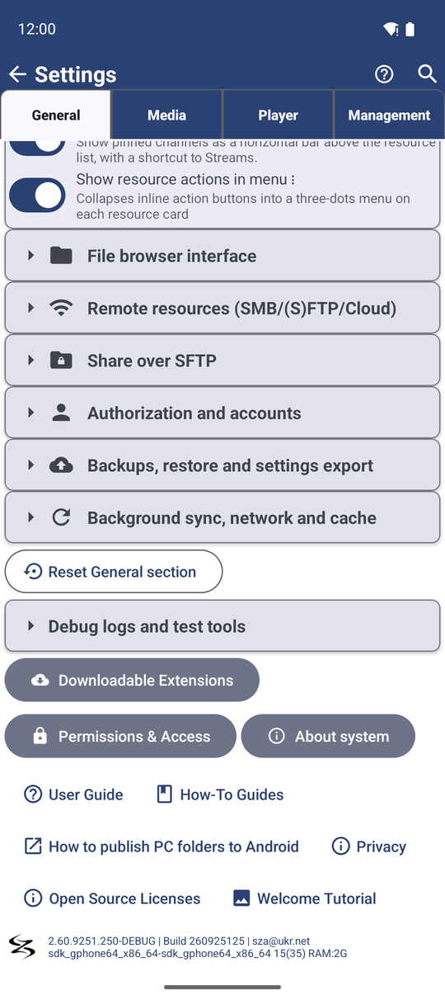
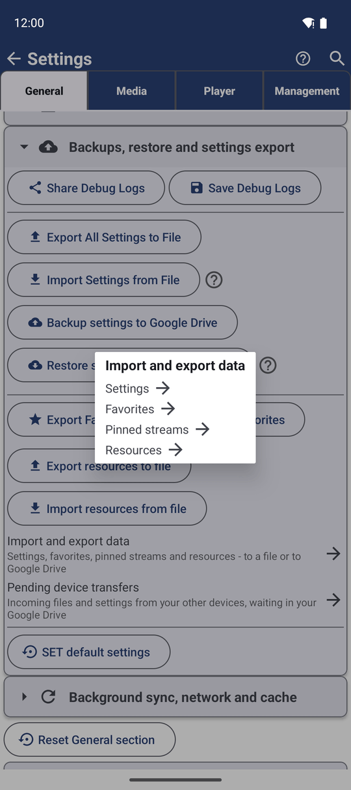

Сім редакцій FastMediaSorter
FastMediaSorter виходить у семи редакціях. Вони виглядають і працюють однаково, але кожна зроблена для певного типу пристрою чи магазину. Ця сторінка показує, для чого зроблена кожна редакція, які функції вона має, де її взяти і як переходити між ними.
Чому вам це сподобається
FastMediaSorter виходить у семи версіях, які називаються редакціями. Вони мають однаковий вигляд і однаковий спосіб роботи, але кожна зроблена для певного типу пристрою чи магазину. Телефон, старий планшет, VR-гарнітура і телефон без сервісів Google - кожен отримує редакцію, яка пасує йому найкраще.
Ця сторінка допоможе вам обрати правильну редакцію перед встановленням і розповість, що робити, якщо пізніше захочеться іншу. Якщо застосунок у вас уже є і ви просто хочете знати, яка це редакція, переходьте одразу до кроку 3.
- ✓ Android-телефон, планшет, TV-приставка, автомобільна магнітола або VR-гарнітура.
- ✓ Версія Android. Ви знайдете її у власних Налаштуваннях телефона, зазвичай під Про телефон або Відомості про ПЗ. Більшості редакцій потрібен Android 8 або новіший; редакції Legacy і FOSS також працюють на Android 6 і 7; редакції VR потрібен Android 10 або новіший.
- ✓ Близько 100 МБ вільного місця для самого застосунку, і ще трохи для ваших медіа.
Познайомтеся з сімома редакціями
Ось для чого зроблена кожна редакція, одним реченням.
- Редакція Standard - рекомендована повна редакція для телефонів, планшетів, ТВ і автомобільних магнітол. Якщо не впевнені, беріть цю.
- Редакція Lite - легша редакція, що відтворює лише локальні фото, відео та музику, без мережевих папок, хмарного сховища, документів чи трансляцій.
- Редакція Photos - лише для картинок, з мережевими папками та хмарним сховищем, але без відео, аудіо, документів чи трансляцій.
- Редакція Legacy - для старіших пристроїв Android, починаючи з Android 6, з більшістю функцій Standard, але без лаунчера і супутника для годинника.
- Редакція FOSS - редакція з відкритим кодом, опублікована в F-Droid, зібрана без жодних закритих частин.
- Редакція VR - для VR-гарнітур на кшталт Meta Quest, з повним набором медіа й immersive-режимом для 3D і 360-градусних файлів.
- Редакція noLegal - редакція лише для встановлення поза магазином, з файлу APK. Вона має все, що має редакція Standard, плюс кілька додатків, які магазини не дозволяють.
Редакція Standard має найширший набір функцій і найпростіші оновлення через Google Play. Ви завжди можете перейти в іншу редакцію пізніше, не втративши налаштувань - див. крок 5.
Подивіться, що кожна редакція може і не може
Кожна редакція показує картинки і дає змогу переглядати, копіювати, переміщати й сортувати файли. Відмінності - в додатках. Список нижче взято з таблиці редакцій, яку генерує сам застосунок, тож він завжди точний.
- Відео та музика - в кожній редакції, крім Photos.
- Мережеві папки (SMB, FTP і SFTP) - в кожній редакції, крім Lite.
- Хмарне сховище (Google Drive, Dropbox, OneDrive) - в Standard, noLegal, Photos, Legacy і VR. Не в Lite і FOSS.
- Документи та електронні книги (PDF, EPUB і текстові файли) - в Standard, noLegal, Legacy, VR і FOSS. Не в Lite і Photos.
- Трансляції (інтернет-радіо і ТВ-канали) та запис із мікрофона - в Standard, noLegal, Legacy і VR. Не в Lite, Photos і FOSS.
- Переклад тексту - в Standard, noLegal, Legacy і VR. Не в Lite, Photos і FOSS.
- Відтворення музики у фоні після виходу з плеєра - в кожній редакції, крім Lite і Photos.
- Chromecast, надсилання відео чи фото на ваш ТВ - в Standard, noLegal, Lite, Photos і Legacy. Не в VR і FOSS.
- Лаунчер (FastMediaSorter як ваш домашній екран), Мережевий монітор і супутник годинника - лише в Standard і noLegal.
- Мовлення з вашої камери чи мікрофона на інші пристрої - в Standard, noLegal і Legacy.
- Immersive-відтворення VR 3D і 360-градусного відео - в редакціях VR і noLegal.
- Відкриття файлів з інших застосунків (FastMediaSorter як плеєр за замовчуванням) - в кожній редакції, крім Lite.
Функція, якої редакція не має, не схована за замком чи оплатою. Її просто немає: жодного пункту меню, кнопки чи налаштування для неї.
Дізнайтеся, яка у вас редакція
Відкрийте Налаштування і залишайтеся на вкладці Загальні. Прогортайте в самий низ. Останній рядок показує версію, номер збірки та адресу підтримки, наприклад 2.5.0-Lite | Build 250 | ... (ваші числа будуть іншими).
Кінець версії підказує редакцію:
- нічого після номера - редакція Standard;
-Lite,-Photos,-Legacy,-FOSS,-VRабо-NoLegal- редакція з цією назвою.
Та сама інформація є в Налаштуваннях, Загальні, Статистика: у технічній частині звіту є рядок Редакція і рядок Версія застосунку. Рядок Редакція використовує коротку внутрішню назву, наприклад standard, photos або noLegal.

Отримайте потрібну редакцію
Кожна редакція має своє місце для завантаження.
- Standard - Google Play, або файл APK з останнього релізу на GitHub.
- Lite, Photos і Legacy - файли APK з останнього релізу на GitHub. Ті самі файли лежать і в дзеркалі на Google Drive як архіви ZIP, для мереж, що блокують завантаження APK.
- VR - файл APK з того самого релізу на GitHub, встановлений на гарнітуру.
- FOSS - каталог F-Droid.
- noLegal - власна сторінка завантаження на сайті FastMediaSorter. Її ніколи не публікують у магазині.
Коли ви встановлюєте файл APK самі, Android запитує, чи довіряєте ви джерелу. Це нормально для будь-якого застосунку не з магазину: дозвольте це один раз для браузера чи файлового менеджера, з якого ви встановлюєте. Довідкова сторінка Android про невідомі застосунки пояснює цей екран.
Редакції Lite, Photos, Legacy і FOSS - окремі застосунки: у кожної свій значок, і вони можуть жити поруч із редакцією Standard на тому самому телефоні. Редакції Standard, VR і noLegal для Android - той самий застосунок, тож встановлення однієї поверх іншої замінює її. Ваші файли ніколи не чіпаються, а налаштування зазвичай лишаються, але резервна копія заздалегідь нічого не коштує - див. крок 5.
Перенесіть налаштування в іншу редакцію
Перш ніж перемикатися, збережіть налаштування у файл, а потім завантажте цей файл у новій редакції.
- У редакції, яка у вас зараз, відкрийте Налаштування, вкладку Загальні, і торкніться Імпорт та експорт даних.
- Торкніться виду даних, який хочете взяти з собою: Налаштування, Обране, Закріплені трансляції або Ресурси. За раз переноситься один вид, тож повторіть ці кроки для кожного потрібного.
- Торкніться Вивантажити - Файл пристрою або Вивантажити - Google Drive і збережіть.
- Встановіть нову редакцію і відкрийте її.
- У новій редакції перейдіть у те саме місце, Імпорт та експорт даних, торкніться того самого виду, а потім Завантажити - Файл пристрою або Завантажити - Google Drive, і виберіть збережений файл.
Повертається все, що підтримує і нова редакція: ваші ресурси, ваше обране, обрані одиниці виміру та решта налаштувань. Те, чого в новій редакції немає - наприклад, хмарні ресурси в редакції Lite - просто пропускається. Повний посібник у резервному копіюванні та відновленні налаштувань.

Що ви отримаєте
Ви знаєте, яка редакція пасує вашому пристрою, де її взяти, які функції вона приносить, як перевірити, яка встановлена, і як перенести налаштування, коли передумаєте.
Поради та усунення несправностей
- Редакція FOSS з F-Droid зібрана з вихідного коду без жодної закритої бібліотеки. Вона зберігає локальні медіа, мережеві папки (SMB, FTP, SFTP), документи, EPUB, анімації, фоновий звук і плеєр за замовчуванням, і в ній немає хмарного сховища, трансляції на ТВ, сполучення з годинником, перекладу чи розпізнавання тексту - вони не лишають по собі ні кнопки, ні рядка, ні віджета. Вона встановлюється поруч із копією з Google Play чи копією поза магазином, а не замінює її.
- Жодного запрошення встановити у редакції VR. Відкриття 3D-контенту в редакції VR одразу його відтворює - застосунок більше не пропонує встановити редакцію VR, яку ви й так уже запустили.
- Старий планшет відмовляється встановлювати застосунок? Якщо він працює на Android 6 чи 7, візьміть редакцію Legacy або FOSS - вони зроблені саме для цього.
- На вашому телефоні бракує функції з іншої сторінки? Перевірте крок 2. Кожна сторінка цього посібника також називає редакції, у яких є кожна функція, ближче до початку.
- Деяким функціям потрібне завантаження. Розпізнавання тексту, додаткові аудіоформати та кілька інших частин завантажуються лише коли вони вам потрібні. Див. завантажувані розширення.
- Застосунок не тією мовою? Див. вибір мови застосунку та одиниць виміру.